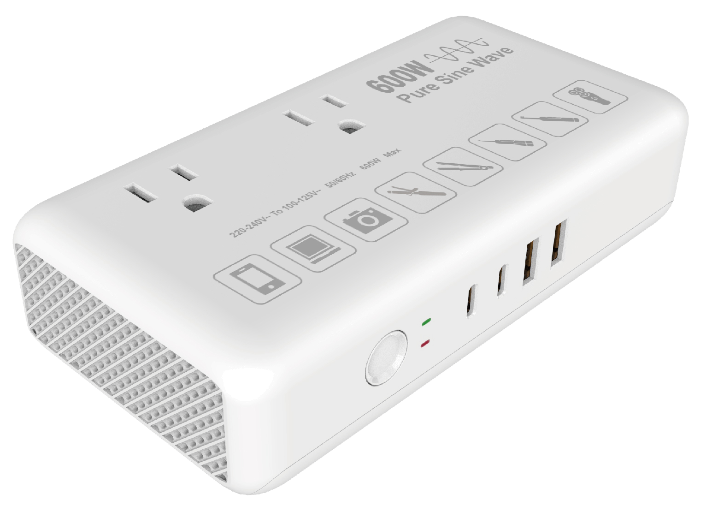

Compact pure sine wave voltage converter. Designed for EU / UK / AU B2B and private-label programs.

| Category | Voltage Converters |
| USB Power | 600W |
| AC Input: | 230V- 15A Max, 50/60Hz |
| Each AC Output: | 115V~15A Max, 60Hz |
| TotalAC output: | 600W Max |
| USB-C1 | 5.0V/3.0A, 9.0V/2.22A,12.0V/1.67A (20.0W Max) |
| USB-C2 | 5.0V/3.0A 15W MAX |
| USB-A1/A2 | 5.0V/2.4A 12W MAX |
| All or Both of any two ports: | 5V/3A 15.0W Shared Max |
| Plug Type | EU / UK / AU / Other plug options |
| Size / Weight | 155 × 78.5 × 55mm/540g |
| Material | PC + Copper |
| Color | Black / White / Custom |
| MOQ | 1000 |
| Certification / Reports | FCC / UL Test Report |
| Patent | Patent approval pending |
| Customization | Logo / Color / Packaging, MOQ 1,000 |
| Packaging | 51.5 × 42.5 × 33cm, 20pcs/carton |
| Target Market | US / JP |
Logo, color, packaging and supported model-specific configurations are available for qualified OEM / ODM projects.
Discuss Your Project